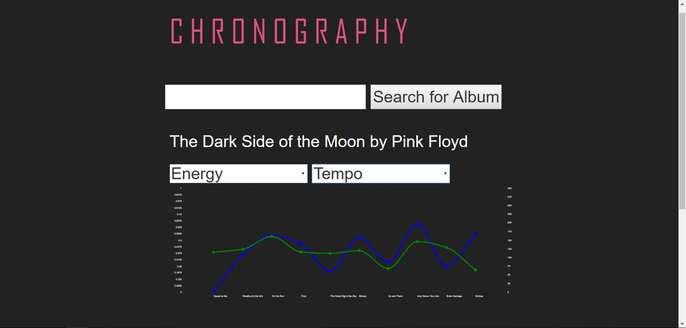
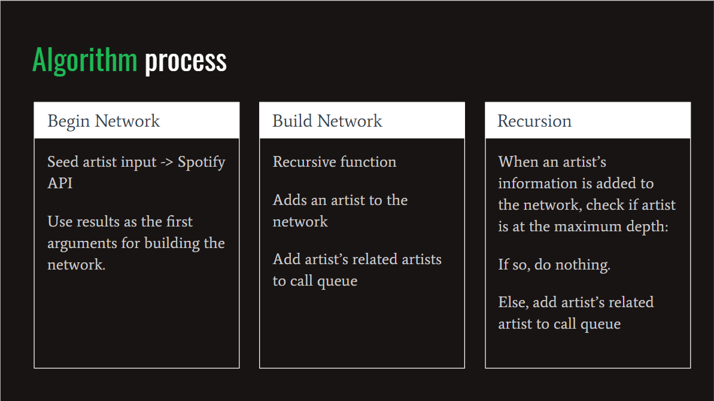
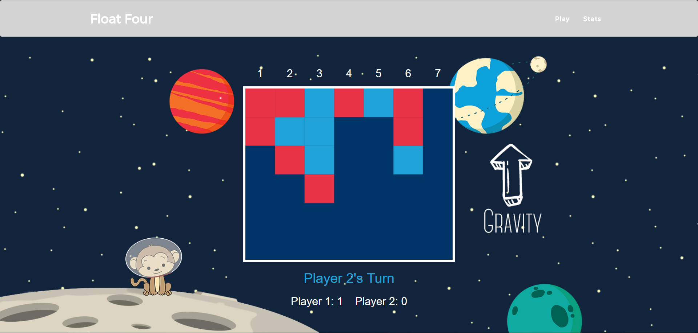

A work-in-progress web app that allows you to compare musical attributes of songs over the course of an album. You can find the source here.

This project was an exploration of attributes of the network of Spotify related artists. You can find the full slides here.

Group project for a web developmnet class. Connect four with a twist.